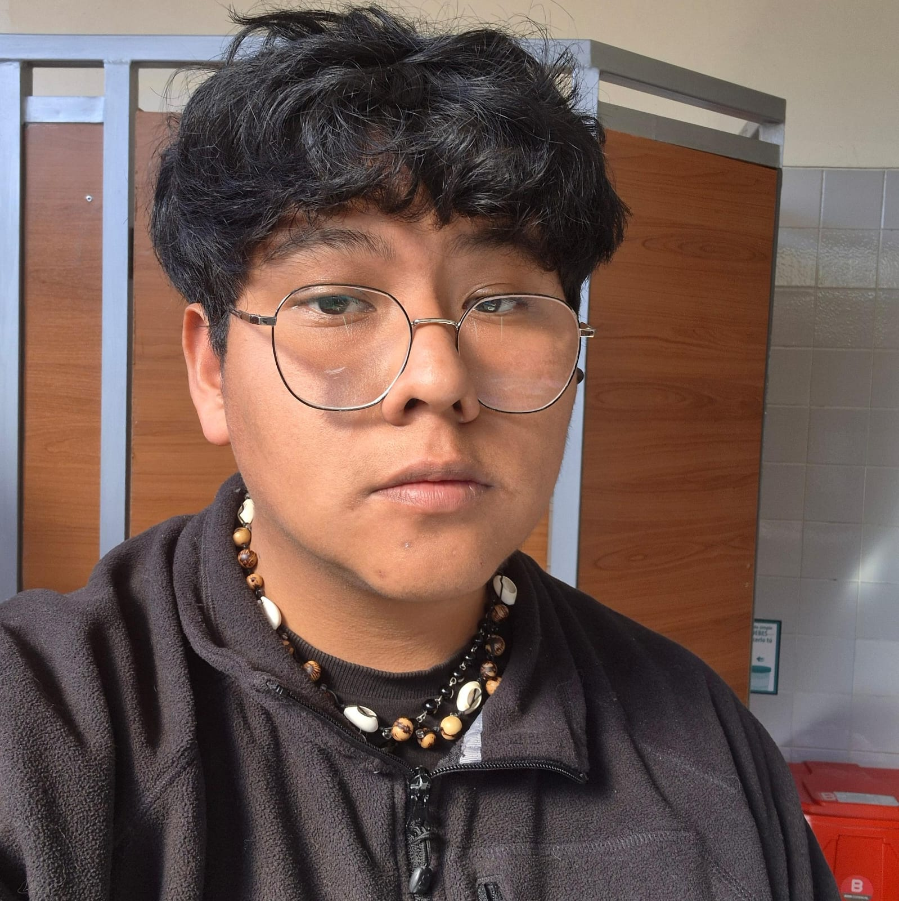

Ingeniería de Sistemas
Universidad Católica Boliviana "San Pablo", La Paz
- En curso (segundo año)

Sistemas que piensan en la gente, no solo en el código.
La Paz, BoliviaSoy Dylan Ortuño, estudiante de Ingeniería de Sistemas en la UCB, en La Paz. Entiendo la tecnología no como un fin en sí mismo, sino como una herramienta al servicio de las personas, por eso complemento mi formación técnica con un compromiso activo en espacios de participación cívica y defensa de derechos humanos. Me interesan particularmente los pueblos indígenas, el pensamiento latinoamericano decolonial y la comunicación social como puente entre la teoría y la realidad cotidiana. Fuera de lo académico, encuentro en la pintura y la lectura una forma de seguir pensando el país desde otro lugar.
Actualmente curso el segundo año de mi carrera, donde combino la formación técnica en programación, estadística e investigación de operaciones con este interés por el análisis social. Completé mi bachillerato en el Instituto Americano Landaeta, graduándome en 2024, etapa en la que ya empecé a involucrarme en actividades vinculadas al debate y al trabajo comunitario.
Y en ese cruce entre sistemas y sociedad es donde encuentro sentido a lo que hago.
Combino una formación técnica en Ingeniería de Sistemas con un compromiso activo en espacios de participación cívica y defensa de derechos humanos. No entiendo estos dos caminos como separados, sino como una misma forma de pensar los problemas: tanto un sistema informático como una política pública necesitan estructura, análisis y una pregunta honesta sobre a quién sirven.
Mis principales fortalezas son la capacidad de análisis interdisciplinario, el trabajo en equipo en contextos de voluntariado y activismo, y la disposición a aprender herramientas nuevas cuando el proyecto lo exige.
Mi objetivo profesional es desarrollarme como ingeniero de sistemas capaz de diseñar soluciones tecnológicas con una perspectiva social clara, aportando desde lo técnico a espacios de defensa de derechos humanos y participación ciudadana.
Universidad Católica Boliviana "San Pablo", La Paz
- En curso (segundo año)
American Institute Landaeta
Graduado en
Cuento con diferentes capacitaciones en protección de Derechos Humanos brindadas en mi estadía como voluntario en la Defensoría del Pueblo, donde desde un punto de vista institucional pude ver cómo funciona y opera la institución oficial de Derechos Humanos encargada de mediar en Bolivia. Además he sido partícipe en diferentes espacios de diálogo como activista independiente en campañas de recolección de datos por las organizaciones UNICEF, Fundación Construir y Pensamiento Divergente.
Organizaciones en las que participo o he participado como parte de mi trabajo de acción social:
| Organización | Cargo | Desde |
|---|---|---|
| Pensamiento Divergente | Voluntario | |
| Defensoría del Pueblo | Voluntario | |
| Re-evolución Koa | Voluntario | |
| Sociedad Científica de Ingeniería de Sistemas | Miembro |
| Idioma | Lectura | Escritura | Conversación |
|---|---|---|---|
| Español | Avanzado | Avanzado | Nativo |
| Inglés | Intermedio | Intermedio | Básico |
Proyecto académico desarrollado en Java con interfaz JavaFX, persistencia de datos en archivo y un sistema de leaderboard.
Tecnologías: Java, JavaFX
Rol: Desarrollador
Proyecto académico en Java para administrar equipos, partidos y resultados de un torneo.
Tecnologías: Java
Rol: Desarrollador
Estos repositorios se piden en vivo a la API pública de GitHub. También puedes consultar otro usuario.
El video de presentación se añadirá en una próxima actualización del sitio.